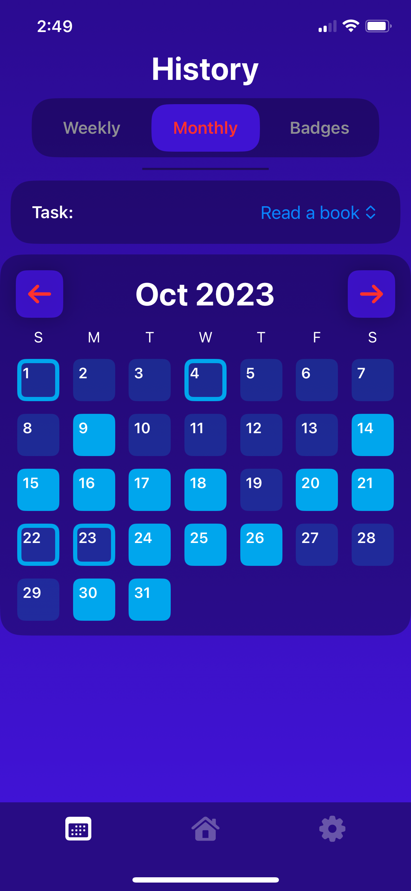
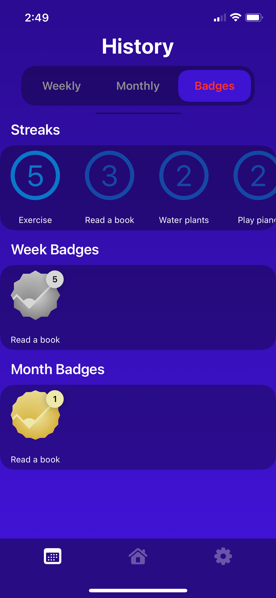
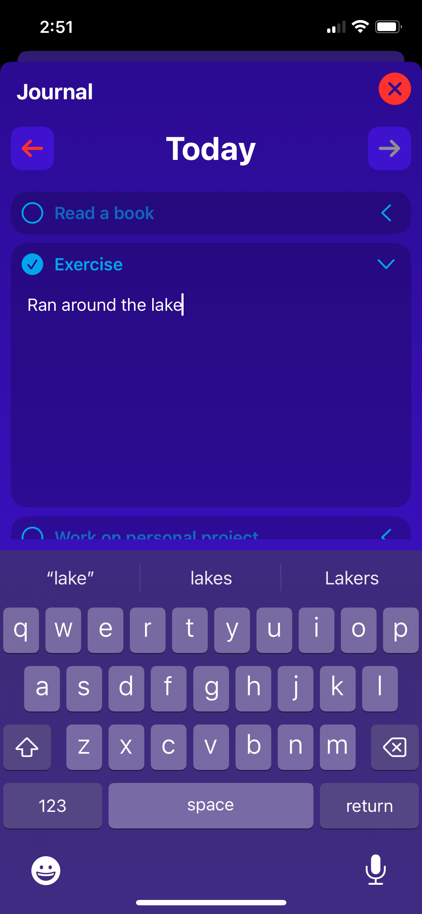
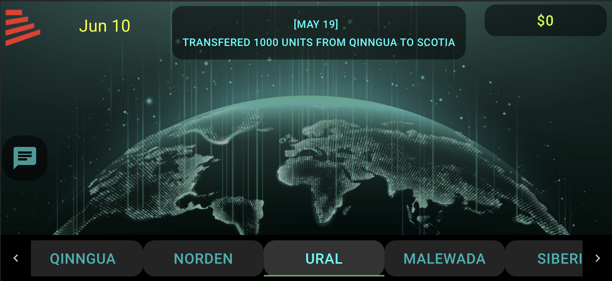

Daniel Glynn


PROJECTS
Todo Today - Daily task tracking app designed to help you build habits
Create a task that you would like to do every day and check it off each day in the app.
Features!
- See how you've been doing by checking the history tab
- View history by week or month
- See how many days in a row you've done a task and earn a badge for doing a task every day for an entire week or month
- Need to make a note about a particular task for today? Open up the journal and write it there
- Hide a task if you don't need to worry about it for now
- Customizable home screen
- Show tasks in a grid or list format
- Dark mode / Light mode
- And many more!



Technical Details:
- For iOS only
- Built in Swift and SwiftUI
- All data stored locally
Other:
- Look for it in the iOS App Store soon
- *Name subject to change
Are My Dice Rigged? - Web app that tells you the statistical significance of a set of 2-dice rolls
Website link: Are My Dice Rigged?
About:
- Enter the count of each 2-dice sum in its corresponding box and hit calculate
- Once calculated, you are presented with a graph of the expected values and the actual values, as well as the p-value for the chi-square goodness of fit test that was performed.
- Gives insight into how likely the results you saw were just due to random chance
Technical Details:
- Built using React and JavaScript, as well as some HTML/CSS
- Used a chi-square JavaScript library for the p-value calculations
- Works entirely on the local browser - no connection to a server necessary
"Pass the Pigs" Online multiplayer game - Based on the dice-based game of the same name
About:
- Play the game "Pass the Pigs" with your friends online
- Preview the lobby to see who is already in the game
- Various quick chat options to send a message to your friends
- First to 100 points wins
Technical Details:
- Built using HTML/CSS/JavaScript with p5.js on the front-end and Node.js, Express, and socket.io on the back-end
- Only one lobby to join - small scale project
Web-based Lumber Market Simulation game - Front-end redesign

About:
- Front-end development and refactoring of a web-based lumber market simulation game.
- Buy/sell lumber in different regions to capitalize on the market
- View messages of actions taken by other players in the game
- Chat feature to communicate with other players
Technical Details:
- Built using React, Material-UI, and JavaScript
- This was a front-end refactor and redesign, not built from the ground up
- Designed the website to look good on both desktop and mobile devices
- Group project with other students from Colorado School of Mines students.
- Worked closely with our client, The Regis Company, to meet their requirements.
"Which Statistics Best Predict the Results of NBA games?" - NBA Boxscore Data Analysis Project
About:
- Data Science project working with an NBA boxscore dataset
- Multiple machine learning models fitted to data and assessed to determine which game statistics correlate most with winning and best predict high winning teams
Technical Details:
- Used Python, scikit-learn, Jupyter notebooks
Some graphs from the report: